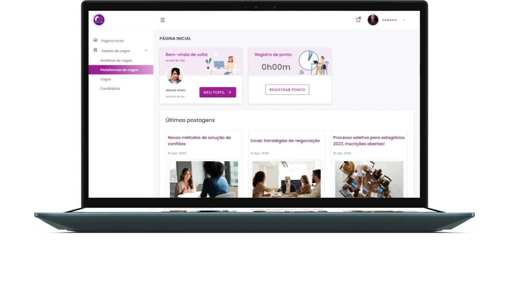
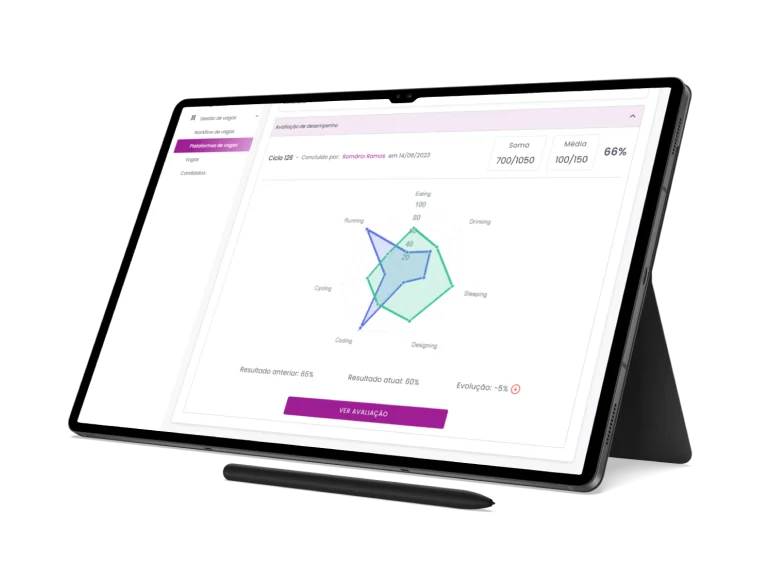
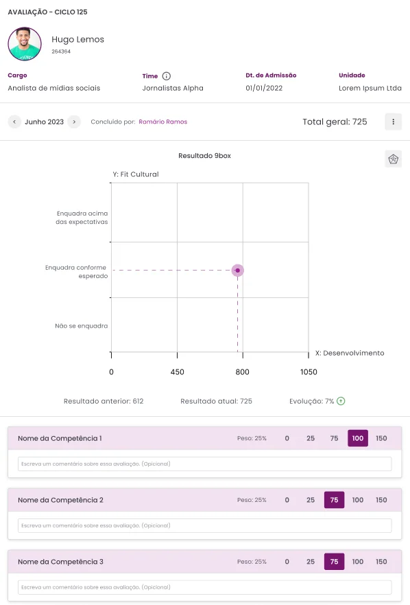
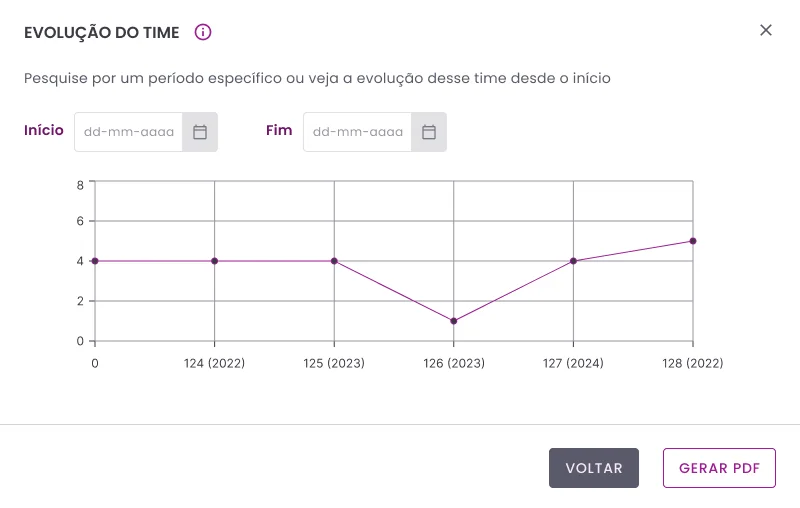
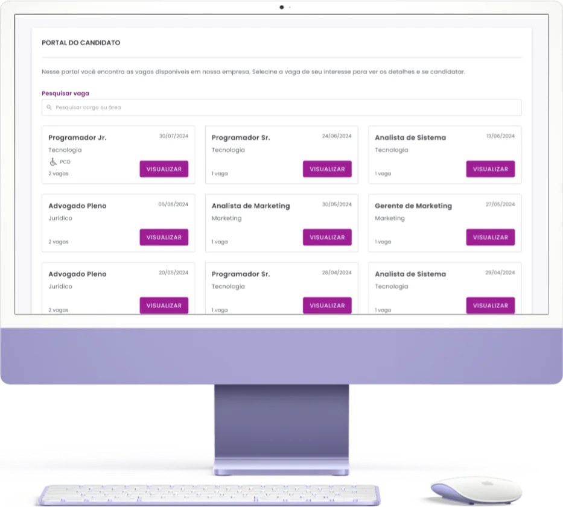
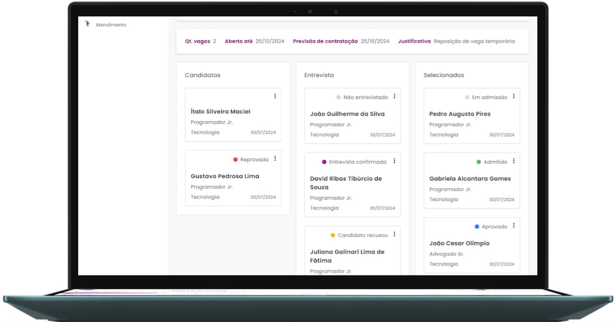
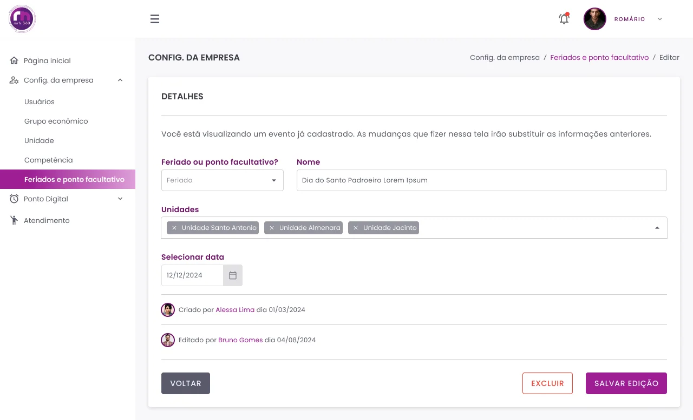
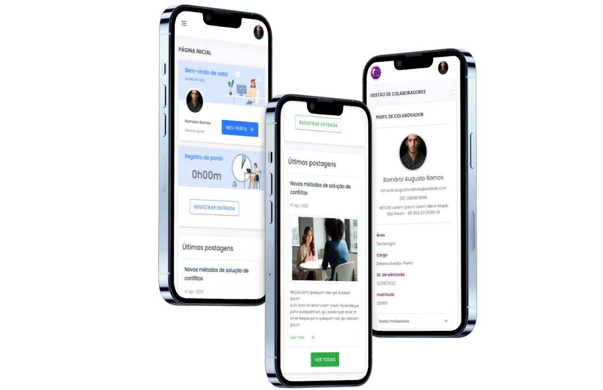
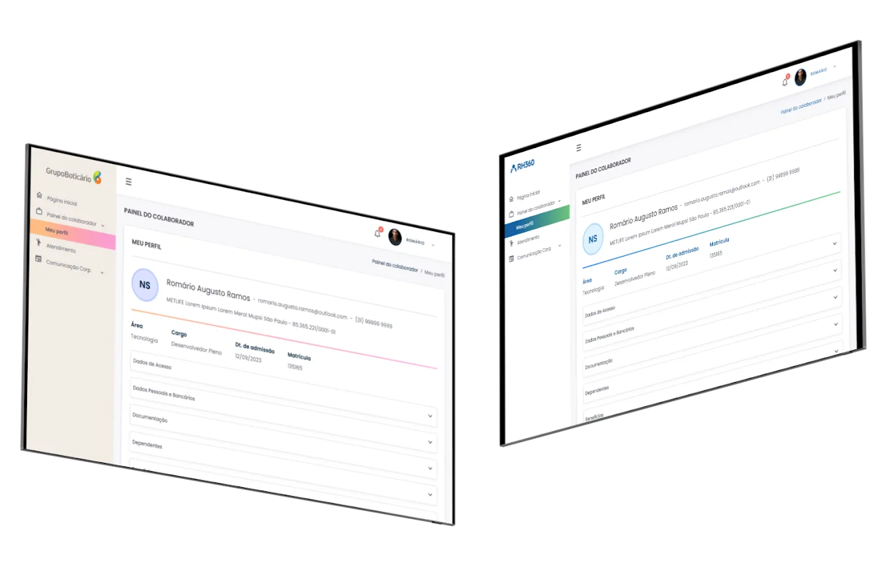

MeuRH360 (MyHR360)

MeuRH360 is a complete human resources management platform.
We work directly with clients and prospects to understand their individual needs, as well as broader market demands.
We leverage our expertise to create efficient and often innovative solutions, always aiming to meet our users’ expectations.
I joined the company in June 2023 as a Mid-Level UX Designer and, over time, became UX Lead and Product Manager. Since then, through constant communication with clients and market research, I have led the creation of workflows such as Development Management, Goal Setting, Digital Time Tracking, Candidate Portal, Work Schedule and Shift Settings, among many others.
After I joined the company:
125% increase in the number of workflows developed
100% increase in the number of research studies conducted
Some of the workflows developed:

Development Management
This feature enables team leaders to evaluate their employees. HR can create evaluation cycles and, on the scheduled dates, conduct reviews, competency assessments, score calibration, and overall feedback. The results can then be presented in several different ways.

Results can be visualised through a radar chart or a 9-box grid. Users can configure each 9-box quadrant, select the metrics, and customise the scoring system.
In addition to providing extensive flexibility when creating an evaluation cycle, users can also define which items will be assessed, competencies alone, or competencies combined with skills and attitudes.

At the end of the process, a detailed report can be generated for an individual employee or an entire team, making it possible to track both individual and collective progress.

Candidate Portal
The Candidate Portal provides each client with an individual page where they can publish and manage job openings and hiring processes internally.
The system also allows job openings to be published on external platforms such as InfoJobs, Vagas.com, LinkedIn, and others.

HR teams and evaluators have access to a Kanban board containing all candidates from any of the platforms being used.
Candidates can be rejected, approved, selected for interviews, organised according to preference, and ultimately, the most qualified candidates can be selected for hiring.
Holidays & Optional Holidays
Clients can configure their own holiday and optional holiday calendars. These dates are reflected in employees’ time sheets to determine the appropriate time-tracking rules for each day.

The configuration is handled through a simple and intuitive workflow in which HR can define whether a specific date is a holiday and which company locations it applies to. This makes it possible to include municipal and state holidays without affecting other locations operating in different states.

White Label
The system follows a white-label approach and is fully compatible with each client’s visual identity.

The UX team prepares each environment while taking into account contrast, hierarchy, typography, and other design principles, all to provide the best possible user experience.
There are many other workflows designed and developed based on the real needs of our clients. Other innovations within the platform include Document Signing, SSO Login, File Importer, Corporate Communications, and many others.